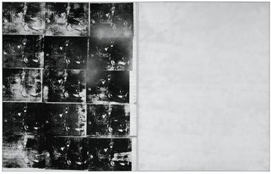

Silver Car Crash (Double Disaster)
Andy Warhol · 1963 · Acrylic and silkscreen on canvas · 243 × 400 cm · Private collection
In copyright. Look and learn: shown for study, not for download.
The Death and Disaster paintings began at a lunch in June 1962, when the curator Henry Geldzahler laid a Daily News headline, 129 Die in Jet, on the table. Warhol went on to take photographs of car crashes, suicides and electric chairs from newspapers, police files and wire services. This canvas is about eight by thirteen feet and had been held by a European collector for twenty years. In November 2013 five bidders drove it to $105 million at Sotheby's, against an estimate of $60 to 80 million.